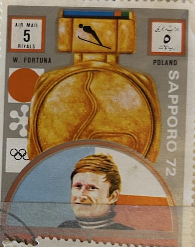
| SOURCE | TITLE| IMAGE MATCH | click to source page |
| Avion Thematics | Macao 1998 Paintings By Didier Rafael Bayle Perf M/sheet Unmounted Mint SG MS 1075, stamps on exhibitions, stamps on arts | 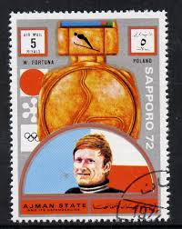 |
| Wikipedia | Vyacheslav Vedenin - Wikipedia | 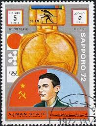 |
| Wikimedia.org | File:1972 stamp of Ajman Ulrich Wehling.jpg - Wikimedia Commons | 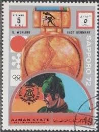 |
| Wikimedia.org | File:1972 stamp of Ajman Ulanov+Rodnina.jpg - Wikimedia Commons | 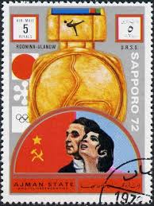 |
| Avion Thematics | Hungary 1966 Football World Cup Perf Set Of 9 Unmounted Mint, Mi 2242-50, stamps on football sport | 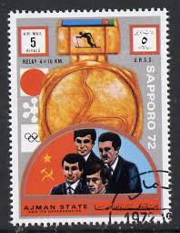 |
| eBay | Tangstamps: Local China Japanese Colony Manchukuo overprint Collection Unused NG | eBay | 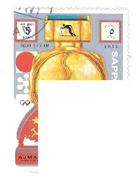 |
| ebid.net | Australia 1988 Living Together 50c Used Stamp on eBid United Kingdom | 190561558 |  |
| eBay | 50 Stamps Poland Regular Stamps Polish Post | eBay | 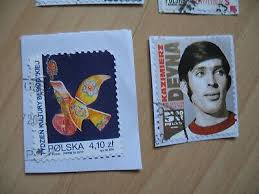 |
| Bomarka | Stamp "Kazimierz Dana" (Poland, 2019) | BOMARKA | 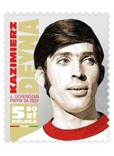 |
| eBay UK | POLAND Kazimierz Deyna, Footballer MNH stamp | eBay UK | 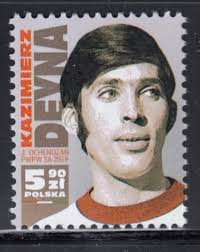 |
| Mystic Stamp Company | 1703 - 1965 Hungary - Mystic Stamp Company | 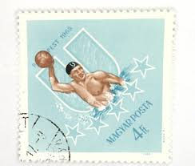 |
| Philip Williams Posters | Mtodziezowe Dni Olimpijczyka – Poster Museum | 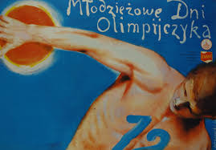 |
| eBay | USSR 1938, SPORT, Mi 657, UNUSUAL & RARE VARIETY "WOMAN WITH SUN GLARES" | eBay | 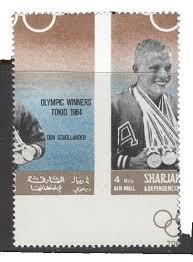 |
| buyhungarianstamps.com | 2855-2860 Poland - 1988 Summer Olympics, Seoul (MNH) – Eastern Europe Postage Stamps | Hungaria Stamp Exchange | 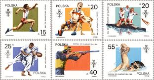 |
| eBay | Ajman 1970 Mexico WC Football Winners Beckenbauer Charlton Anastasi Imperf MNH | eBay | 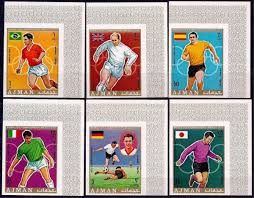 |
| eBay | 1970/71 ESSO POWER PLAYERS NHL HOCKEY STAMP CARD PHIL ESPOSITO SHARP+ 70/71 ESSO | eBay | 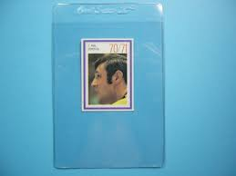 |
| Amazon.com | Amazon.com: Poland 3042-3047 (Complete.Issue.) unmounted Mint/Never hinged ** MNH 1986 Polish Athletes at WM 1985 (Stamps for Collectors) Cycles : Toys & Games | 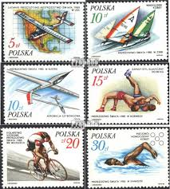 |
| eBay | RRR G26 Color Variations 2 Sheets 1968 Arab Sport SOCCER Football | eBay | 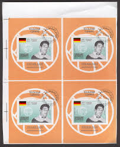 |
| eBay | Poland 2149-2156 (complete issue) used 1972 Olympics Games `72, | eBay | 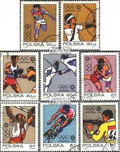 |
| postbeeld.com | Stamp 1974, Poland World Cup Football s/s, 1974 - Collecting Stamps - PostBeeld - Online Stamp Shop - Collecting | 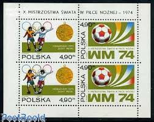 |
| eBay | Dominica Rep. 1960 MNH Imperf, Swimming Mauru Furukawa, Melbourne Olympics | eBay | 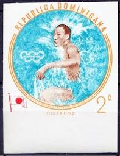 |
| eBay | Russia 1749-1752, CTO. Mil 1752-1755. Polish-USSR treaty-10. Poets, Copernicus, | eBay | 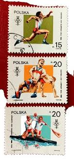 |
| worldartstamps | Football World Cup USA 1994 – worldartstamps | 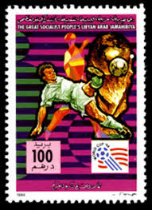 |
| Etsy | Vintage Olympics Postcards, Poland, Rare Prepaid Collection - Etsy | 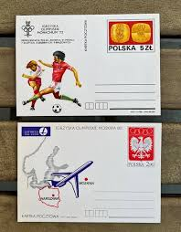 |
| eBay | AJMAN 1970 SOCCER, Cpl MNH/** GOLD Overprinted ImPerf + Perf Sets + Sheets,UAE | eBay | 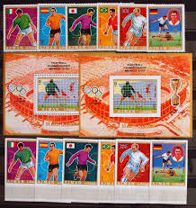 |
| Wikimedia.org | File:1972 stamp of Umm al-Quwain Monika Pflug.jpg - Wikimedia Commons | 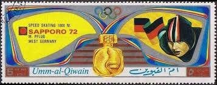 |
| eBay | Poland 2315-16, FIFA World Cup | eBay | 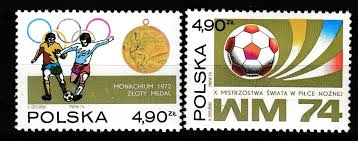 |
| eBay | Tip Topical Poland PL 1740 Used- Sports / Olympics / Soccer with Information Tab | eBay | 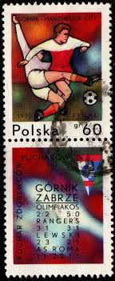 |
| eBay | Nicaragua Los Angeles 1984 sports 6 stamps | eBay | 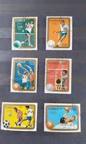 |
| eBay | Mauritania 1993 Yvert 670/74 IMPERFORATE Sports Olympics Lillehamer 94 MNH VF | eBay | 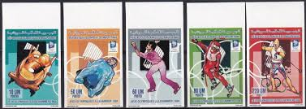 |
| eBay | Figurina calciatori CORRADI - GENOA N.145 Ed. VAV 1959-'60 orig. | eBay | 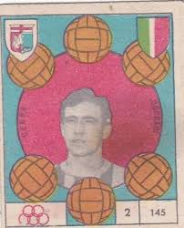 |
| eBay | Benin 1995 year , mint stamps MNH (**) set+ block sport Olympics | eBay | 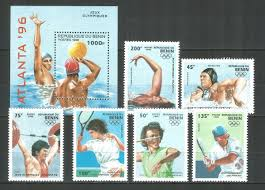 |
| eBay | 1970 ESSO HOCKEY POWER PLAYERS 7 PHIL ESPOSITO BOSTON BRUINS NEAR MINT | eBay | 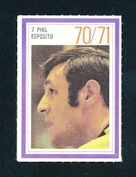 |
| eBay | Warsaw Berlin Praha bike race 1977 vintage poster germany poland czech | eBay | 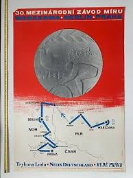 |
| Mystic Stamp | 2750-53 - 1986 Poland - Mystic Stamp Company | 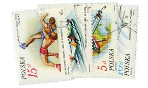 |
| eBay | 1970 ESSO HOCKEY POWER PLAYERS 21 DANNY GRANT MINNESOTA NORTH STARS MINT | eBay | 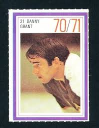 |
| eBay | Ras Al Khaima 1972 Summer Olympic, Munich 1972, MNH, imperf. | eBay | 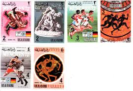 |
| Delcampe | Summer 1976: Montreal - 1976 STAFFA SCOTLAND SHEET sports montreal canada XXI OLYMPIAD OLYMPIC GAMES CANCELLED TO ORDER CTO full gum | 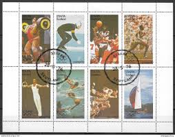 |
| eBay | SET TEAM POLAND Futbol/Soccer 18 Cards + Stickers WC España ´82/NARANJITO POLONI | eBay | 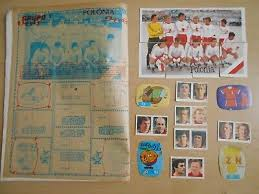 |
| eBay | 👉 HUNGARY 1980's SPORTS/OLYMPICS MNH | eBay | 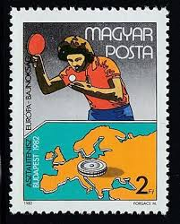 |
| eBay | 1964 Hungary Tokyo Summer Olympics Stamp Set of 10 SC #1598-1606 #48st | eBay | 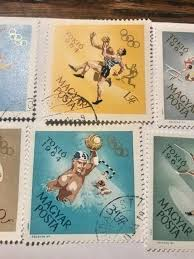 |
| eBay | Poland Polish Victories International Competitions 1986 MNH-4,50 Euro | eBay | 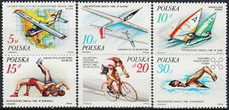 |
| eBay | Poland Soccer Manchester Champion stamp 1970 MNH A-2 | eBay | 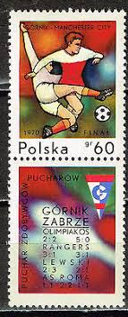 |
| eBay | Postal Stationery Poland, 1986. Gdansk. Olympic Games Munich Football | eBay | 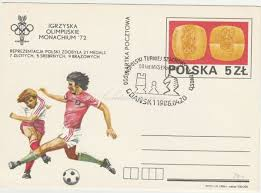 |
| eBay | POLAND Sc 2750-55 NH ISSUE OF 1986 - SPORT | eBay | 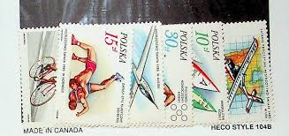 |
| CharityStars | 1,000 Lire 1982 Fifa World Cup - Stamp Signed by Giuseppe Dossena - CharityStars | 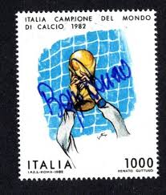 |
| eBay | USA Olympic Games Los Angeles 1984 silk Colorano Pentathlon cover cancel Pentath | eBay | 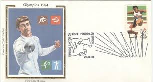 |
{kind=link}
{kind=link}
{kind=link}